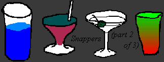

<HTML><HEAD><TITLE>Snappers</TITLE></HTML> 

<BODY BACKGROUND="" BGCOLOR="#ffffff" 
TEXT="#000000" LINK="#603000" ALINK="#ffff00" VLINK="#503000">
<CENTER>

</CENTER><P>

We had our second child, a boy, when Eliza was four.  Eliza had been an 
easy baby (more or less), but Keith was born in a state of existential 
angst and stayed that way many months.  It's interesting how 
kids come out of the womb with their personalities already formed; Keith was 
deep and sensitive and full of worries -- worries that Maggie's breasts 
would go away, that a loud noise meant a monster was about to eat him, that if 
we put him down for a nap we would never, ever, ever pick him up again.<P>

Maggie came up with a strategy: we would just shower Keith with so much love 
and affection and understanding that he would eventually replace his 
deep-seated anxieties with trust and inner security.  It actually worked.    
By the time he was four or five months old he started smiling and laughing and 
acting sort of like a human being.  This was a really nice change.  Then he 
got laryngitis.<P>

Laryngitis in adults is no big deal, but when a baby gets it it's called 
'croup' and can be very serious, because the breathing passages can swell up 
till they close.  It's a real scary thing; until this happened to us I had no 
idea how hard it was to tend to a sick baby.  For poor Keith, who was just 
learning how to be a little bit happy, it was like nature had played a dirty 
trick on him.  He reverted back to his miserable self, and was even worse than 
ever because the medicine made him drowsy.  He'd spend all day in our arms,
coughing and looking miserable.<P>

He wasn't responding to the medication.  In the middle of the second night 
we had a really scary moment.  He started choking in bed and it sounded like 
his larynx was swelling to the point where it could close.  Maggie hugged the 
wheezing sputtering child, terrified.  "What do we do?  I don't know what's 
happening!"  Eliza sensed our fear and started bawling.  I ran to our medical 
books and tried to find the pages on croup, but the howling in the kids room o
was so loud  I couldn't think.  I ran back in and told Maggie, "Get them 
dressed!  Let's go to the emergency room!"  <P>

The four of us sat in the waiting room for a half-hour, Maggie and I 
ring-eyed and exhausted, Keith wheezing and choking, Eliza silent and tearful.  
The doctors gave Keith a shot that was supposed to open his passages, but
he hardly responded to the treatment.  Our family doctor arrived in the 
late morning, checked Keith out and recommended that he spend the day in a 
hospital room where he could be monitored.  Maggie was practically hysterical 
at the thought of leaving her baby in a hospital, and began making 
arrangements to stay with him.  The doctor suggested one more thing; it was a 
chilly morning, and he asked us to walk Keith once around the block.  We did, 
and halfway around the block Keith coughed up some phlegm.  It was a stronger 
cough, a sturdier, healthier sound than we'd heard from him in days.  He 
looked at us and his eyes were bright and alert.  Like a miracle, the walk 
around the block in the brisk morning air had triggered a response.  
Keith was out of his wheezing, feverish daze.  The doctor kept him 
under watch for the next hour, and then said we could go home.  I remember 
looking at Keith's beautiful, sensitive 
face as we carried him back to the car; Maggie had him over her shoulder, 
and he stared at me with eyes that were sad but grateful.  The ordeal was 
over, and he knew it too.<P>

<CENTER><I>
<A HREF="Snappers3.html">Continue to End of Story</A><P>
</I></CENTER>

<A HREF="../Queensboro.html">Queensboro Ballads</A><BR> by
<A HREF="http://www.litkicks.com/HomePages/LeviAsher.html">Levi Asher</A><P>
</BODY></HTML>
